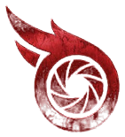

We move in silence.
Shadows is a media and advertising agency. We shoot, produce and run the campaigns that make your brand unmistakable.
What we make
Photography
Product, fashion and campaign shoots in dramatic, controlled light.
Video production
Ads, reels and brand films, from script to final cut.
Ad campaigns
Paid social and digital ads planned around one clear goal.
Brand identity
Logos and visual systems built to stay unmistakable.
Selected work
We share our portfolio directly. Tell us your industry and we'll send you the projects closest to your brand.
Make an impact. Stay unmistakable.
Bold, cinematic and confident work from one crew of directors, photographers, designers and media buyers. You work with the people behind the camera, not a chain of account managers.
Ready to make an impact?
Tell us about your brand and your goal. We reply within one working day.

© 2026 Shadows Media & Advertising